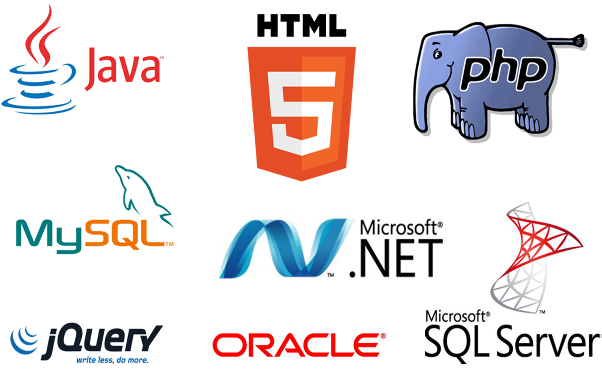
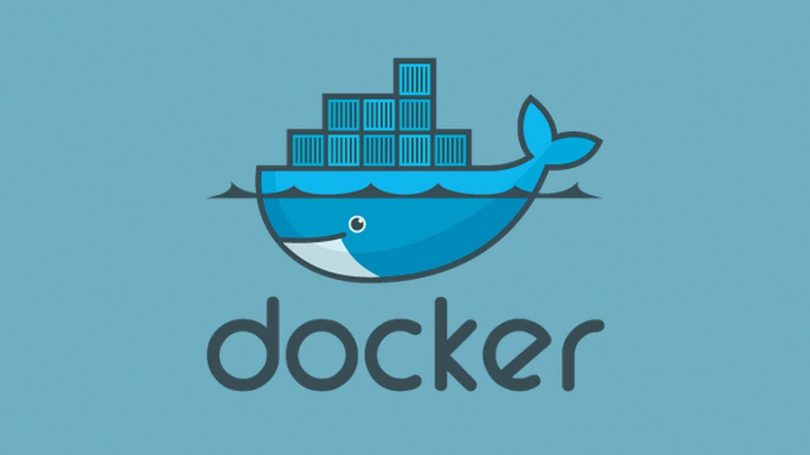

Herramientas utilizadas en programación
Los programadores utilizan diferentes herramientas para desarrollar software de manera eficiente. Estas herramientas permiten escribir código, organizar proyectos y trabajar en equipo con otros desarrolladores. Algunas de estas herramientas facilitan la escritura de código mientras que otras ayudan a controlar los cambios realizados en un proyecto.
Actualmente existen muchas herramientas que ayudan a los desarrolladores a mejorar su productividad. Los editores de código modernos incluyen resaltado de sintaxis, autocompletado y extensiones que permiten trabajar con diferentes lenguajes de programación.



HERRAMIENTAS DE PROGRAMACIÓN
| Herramienta | Tipo | Año de creación | Uso principal |
|---|---|---|---|
| Visual Studio Code | Editor de código | 2015 | Programar en múltiples lenguajes |
| Git | Sistema de control de versiones | 2005 | Controlar cambios en proyectos |
| GitHub | Repositorio online | 2008 | Compartir proyectos |
| Docker | Contenedores | 2013 | Desplegar aplicaciones |
| Tabla de herramientas usadas por programadores | |||